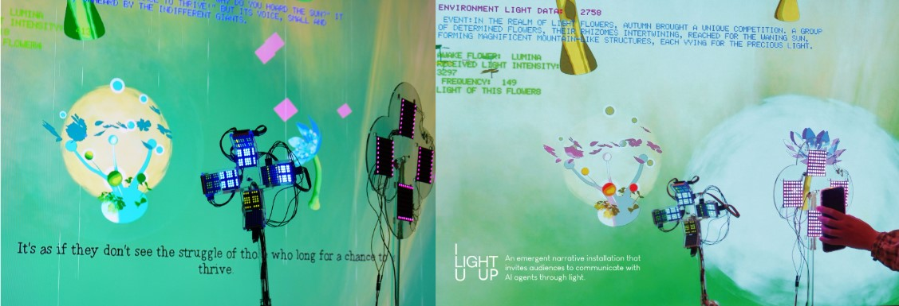
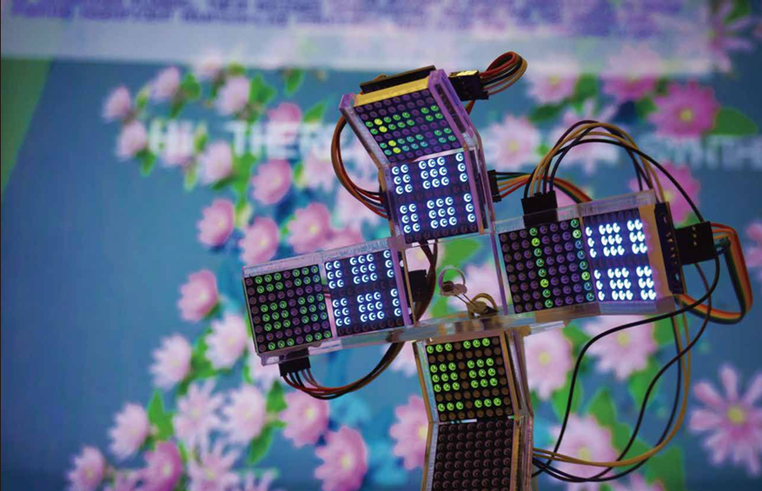
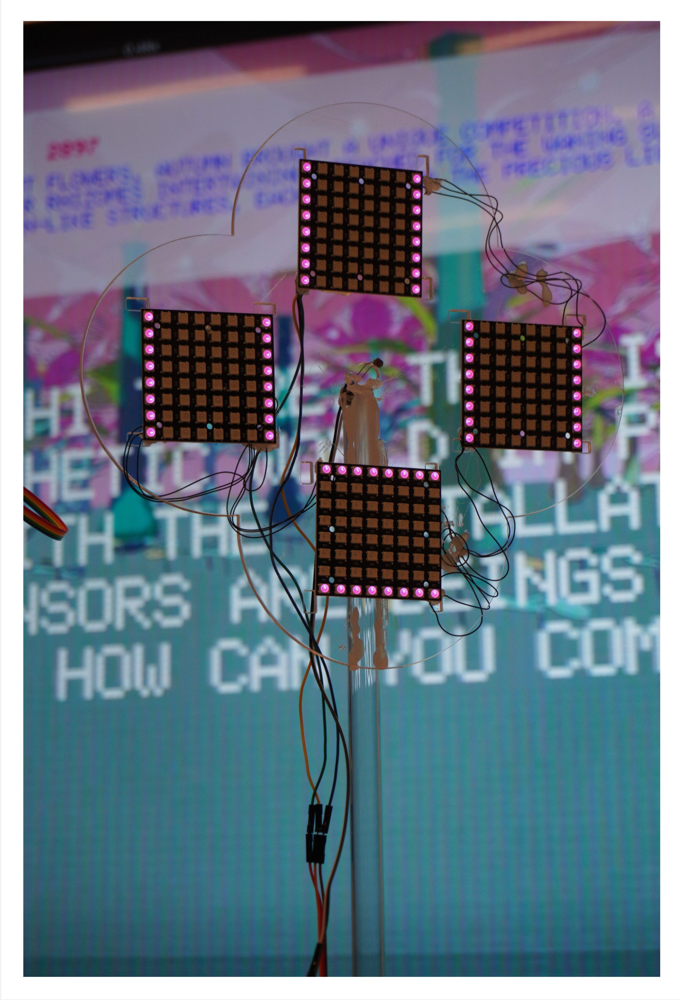
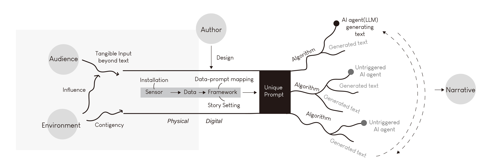
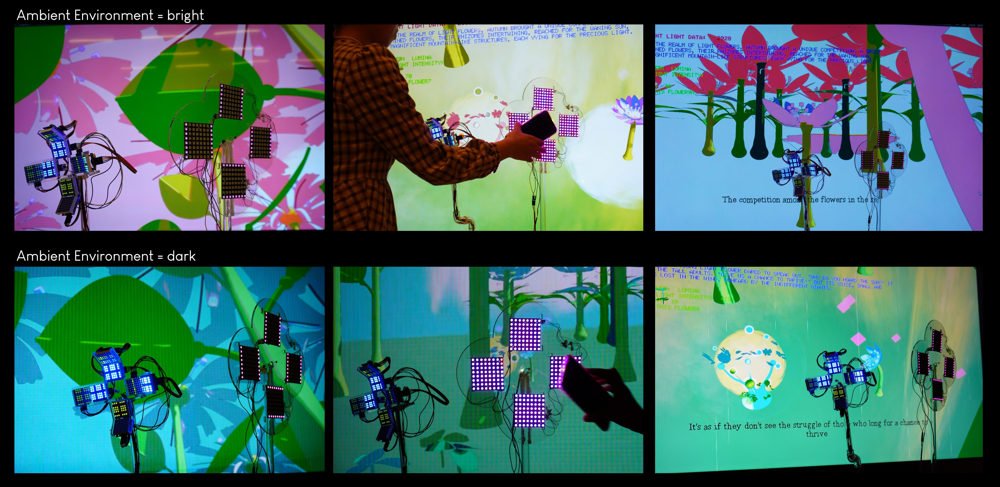
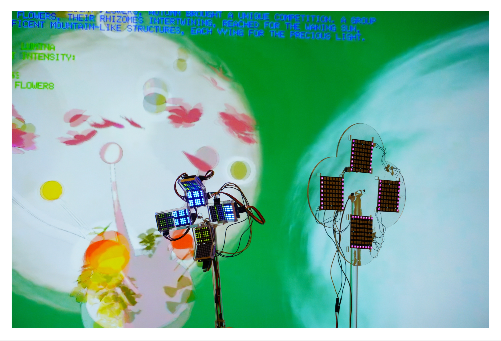
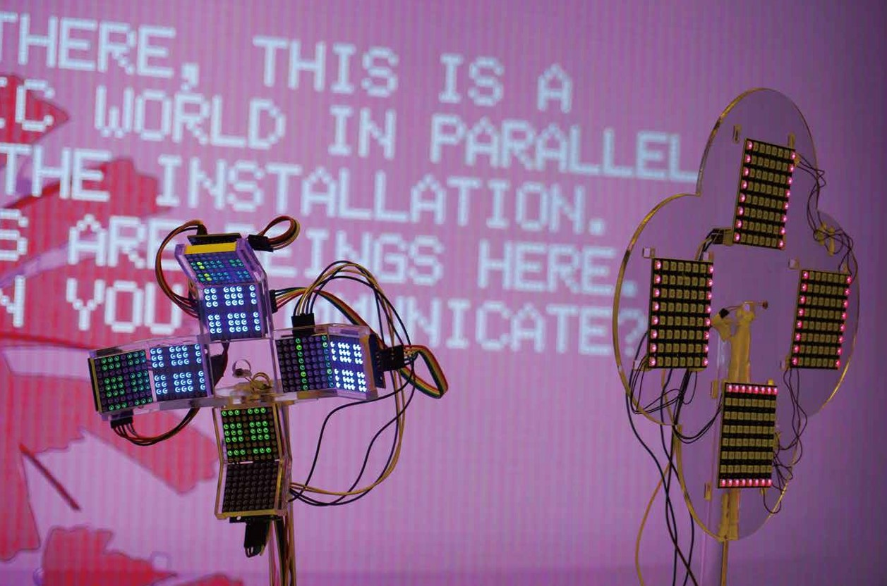
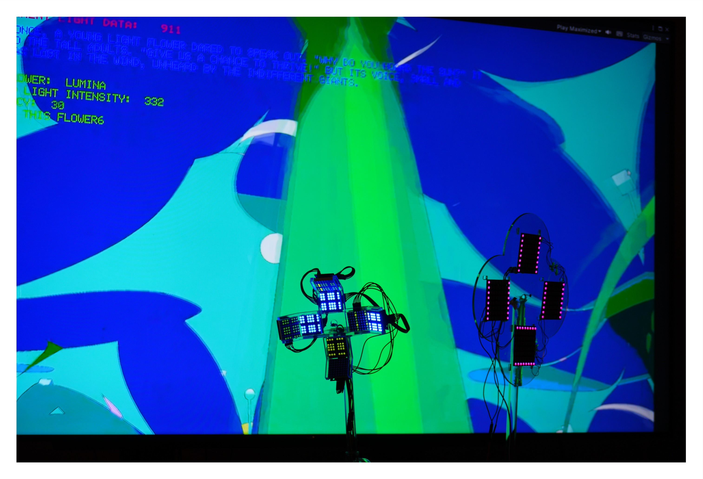
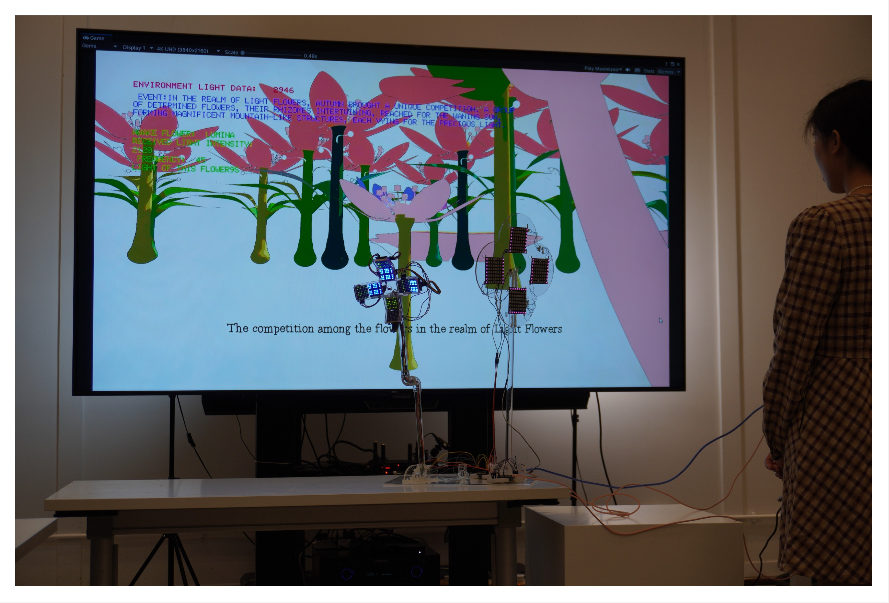
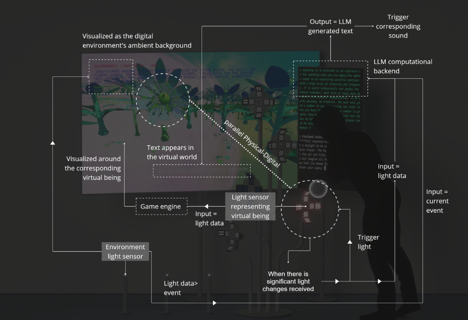

I Light U Up

FAFA is a plant-like virus program attacking AI systems, hosted in a light sensor USB. It connects the growth process of Arabidopsis thaliana with the generative process of large language models, allowing people to cultivate an artificial intelligence that relies on light and time to grow.
Trailer video
Video source: Bilibili
Publication and Exhibition
This project was published in SIGGRAPH ASIA 2024 Art Paper
Concept
ILightUUp is an interactive installation powered by Large Language Models (LLMs) and light, exploring light as prompts for emergent narrative. This installation features a physical flower complex with light sensors, and a virtual narrative world on a digital screen. The audience can use light to communicate with different virtual beings "living" inside the sensors. The ambient light shapes events in the virtual world, while the flowers react to their surroundings by sensing light. This work embraces ambiguity in data sensing, much like the misunderstandings that occur in human conversations.
.*


.*
The exact light received by the sensor will prompt its responses, rather than reflecting what the human interactor intends to express. Different narratives emerge from the virtual world in the recursion of each human-sensor communication.

This work applies LLMs to drive the “virtual” lives of the sensors. Through this, it envisions a scenario where environmental information, such as light, humidity, and temperature, is not presented in a graphical format but instead integrated into an imaginative, poetic space that influences the organic growth and interaction of beings within that environment.
Rather than merely judging the data, individuals would read, understand, and feel the emotions of this narrative world, as if the data were spatially manifested before them.

Publication and Exhibition
This project was published in SIGGRAPH ASIA 2024 Art Paper
Gallery





